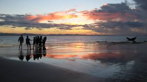
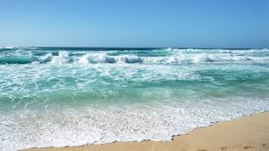
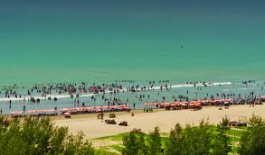
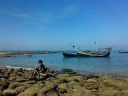

Welcome to coxsBazar
Cox's Bazar (Bengali: কক্সবাজার, Koksbajar, Koksbazar or Kokshbajar) is a town, a fishing port and district headquarters in Bangladesh. The beach in Cox's Bazar is an unbroken 120 km (75 mi) sandy sea beach with a gentle slope, one of the world's longest.[2][3][4] It is located 150 km (93 mi) south of the industrial port Chittagong. Cox's Bazar is also known by the name Panowa, whose literal translation means "yellow flower." Its other old name was "Palongkee". The modern Cox's Bazar derives its name from Captain Hiram Cox (died 1799), an officer of the British East India Company. Cox was appointed Superintendent of Palongkee outpost after Warren Hastings became Governor of Bengal. Captain Cox was specially mobilised to deal with a century-long conflict between Arakan refugees and local Rakhains. He embarked upon the task of rehabilitating refugees in the area and made significant progress. Captain Cox died in 1799 before he could finish his work. To commemorate his role in rehabilitation work, a market was established and named Cox's Bazar ("Cox's Market") after him. Today, Cox's Bazar is one of the most-visited tourist destinations in Bangladesh, though it is not a major international tourist destination. In 2013, the Bangladesh Government formed the Tourist Police unit to better protect local and foreign tourists, as well as to look after the nature and wildlife in the tourist spots of Cox's Bazar.[5]
Spots in coxsbazar
-  Many attractions are for the tourists around Cox's Bazar. You can go Himchori to see it's Waterfall, this is famous for waterfall, though in the winter season it dwindles but during the rainy season it's really a fabulous and full waterfall can be enjoyed. Location: Located 12 km south of Bazar Town and 6 km from the Kalatali beach by the hill. Area: 1,729 hectares. Getting there: From Kalatali stand, it is only 15-minute ride to entry; if you take a taxi or chandergari (local transport). You can also rent a car from Bazar. Outstanding Features: 1)Beautiful-waterfall . 2)HimchariNationalPark . 3)BrokenHill . 4) Christmas Tree .
-  Town Cox's Bazar (Town), Cox's Bazar municipality, was constituted in 1869, eventually becoming a B-grade municipality in 1989. Located along the Bay of Bengal in South Eastern Bangladesh, Cox's Bazar Town is a large port and health resort. But it is famous mostly for its long natural sandy beach. The municipality covers an area of 6.85 km2 (2.64 sq mi) with 27 mahallas and 9 wards and has a population of 51,918.[6] Cox's Bazar is connected by road and air with Chittagong.[7]
-
 Inani Beach (also Enani Beach) is an 18-kilometre-long (11 mi) sea beach in Ukhia Upazila of Cox's Bazar District, Bangladesh.[1][2] It has a lot of coral stone. This coral stones look green and live in summer or in rainy season.[3].
Inani Beach (also Enani Beach) is an 18-kilometre-long (11 mi) sea beach in Ukhia Upazila of Cox's Bazar District, Bangladesh.[1][2] It has a lot of coral stone. This coral stones look green and live in summer or in rainy season.[3].
Saint Martin
Saint Martin (French: Saint-Martin; Dutch: Sint Maarten) is an island in the northeast Caribbean, approximately 300 km (190 mi) east of Puerto Rico. The 87-square-kilometre (34 sq mi) island is divided roughly 60/40 between the French Republic (53 km2, 20 sq mi)[1] and the Kingdom of the Netherlands (34 km2, 13 sq mi);[2] but the two parts are roughly equal in population, with slightly more people living on the Dutch side. It is the smallest inhabited island divided between two nations. The division dates to 1648. The southern Dutch part comprises Sint Maarten and is one of four constituent countries that form the Kingdom of the Netherlands. The northern French part comprises the Collectivité de Saint-Martin (Collectivity of St Martin) and is an overseas collectivity of France. On 1 January 2009, the population of the whole island was 77,741 inhabitants, with 40,917 living on the Dutch side,[3] and 36,824 on the French side.[4] Collectively, the two territories are known as "St-Martin / St Maarten". Sometimes "SXM", the IATA identifier for Princess Juliana International Airport (the island's main airport), is used to refer to the island. St. Martin (the French portion) received the ISO 3166-1 code MF in October 2007.[5] The Dutch part changed in status to a country within the Kingdom of the Netherlands in 2010 and was given the code SX.[6]